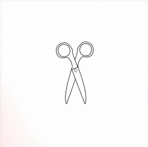
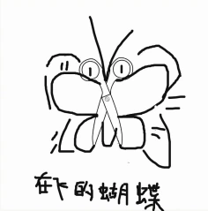
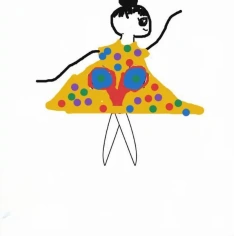
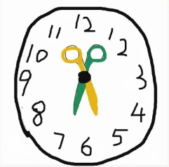

Begin with their ideas.
An initial two minutes without AI gives children space to interpret the starting shape themselves.
Adaptive AI Withdrawal in Children’s Creative Drawing
A little support. A little space.
AI that steps back as children’s ideas take shape.

What could this become?
An idea takes flight.
Make it your own.
Find a new direction.01 / THE IDEA
A child’s need for help can change
before the drawing is finished.
A suggestion may open up a direction. Then comes the space to explore it, revise it, and make it their own. Later, a new idea may bring a reason to ask for help again.
DrawBreath explores adaptive withdrawal: using ongoing canvas activity and interaction history to decide whether AI should stay present, observe further, or step back—while keeping the child in control of its return.
AI can support children’s creative work, but its continued presence may outlast the need for help. We investigate adaptive withdrawal through DrawBreath, a drawing system that uses canvas activity and interaction history to determine when to stay present, observe, or withdraw, with interruptible fading and child-initiated re-entry. In a single-condition study, 65 sixth-grade children completed an open-ended drawing continuation task. We analyzed participation judgments, interaction logs, and post-task evaluations. Stable drawing followed 80% of completed withdrawals, and children generally reported being able to continue drawing after withdrawal, suggesting that withdrawal often occurred at moments compatible with continued independent creation. Illustrative trajectories situated withdrawal within ongoing elaboration, revision, and later reorientation, sometimes followed by renewed help-seeking. These findings frame withdrawal as a reversible adjustment within creation and inform the design of AI support that can step back while remaining accessible. Code, data, and study materials are available at draw-breath.github.io.
Can AI determine when to stay, observe, or withdraw from the unfolding creative process?
How is AI withdrawal situated within children’s evolving visual creative trajectories?
02 / MEET DRAWBREATH
Three internal judgments. A gradual, reversible step back.
The drawing workspace always stays available.
When evidence favors continued availability—for example, during an active support exchange—the assistant stays present.
The sidebar remains visible and available.
Select a judgment to explore the design.
Stay and Observe share the same visible interface. These judgment labels were not shown to children. This illustration simplifies the research system.
An initial two minutes without AI gives children space to interpret the starting shape themselves.
Canvas activity and interaction history inform participation together. A pause alone never triggers withdrawal.
Children can interrupt the fade, restore a previous conversation, or start a new question after withdrawal.
03 / THE STUDY
65 sixth-grade children. One open-ended drawing task. A single-condition study of how withdrawal unfolded—and what happened next.
One task per child, lasting up to 15 minutes, with an initial two-minute independent opening.
52 of 65 completed withdrawals across 61 task records were followed by stable continuation.
60 of 65 children agreed with this questionnaire item (Q6); the same number agreed they knew what to draw next (Q5).
The system separates model judgments, runtime safeguards, and visible interface changes. A decision to withdraw begins an interruptible transition.
Three fades were cancelled through child re-engagement. Most Withdraw judgments concerned unused AI presence (59 of 77); 18 followed support.
Drawing was the first observed event within 90 seconds after 57 of 65 completed withdrawals. Among these drawing-first episodes, the median time to the first mark was 5.6 seconds.
Stable continuation: the picture continues to take shape and develop through sustained drawing or revision. In the analysis, this was identified by at least three stroke or erasure initiations spanning at least 10 seconds, before AI re-entry, task end, or the end of the 90-second window.
04 / CREATIVE TRAJECTORIES
Withdrawal was a moment within creation.
Children continued to elaborate, revise, and change direction.
A butterfly interpretation was already established. After withdrawal, the child added details and annotations.
The character remained, while its body and clothing were substantially reworked through child-led experimentation.
A figure became a clock. A new help request brought AI back, followed by another withdrawal.
All artwork shown above comes from the paper’s illustrative trajectories. The three cases provide process context, rather than population-level categories.
Provisional BibTeX for the supplied manuscript. Author and publication details can be updated in the final version.
@misc{drawbreath2027,
title = {Knowing When to Do Less: Adaptive AI Withdrawal
in Children's Creative Drawing},
year = {2027},
note = {Research manuscript, anonymous version},
howpublished = {\url{https://github.com/Draw-Breath/DrawBreath_Supplementary-Material}}
}